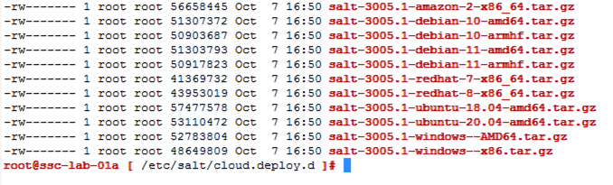
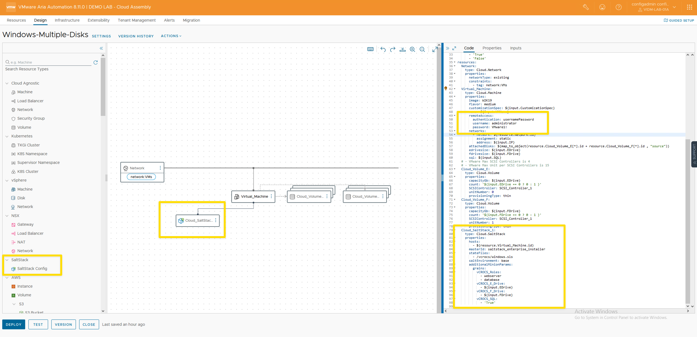
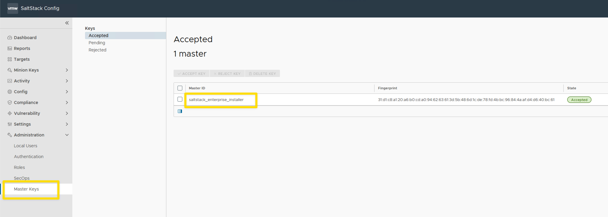
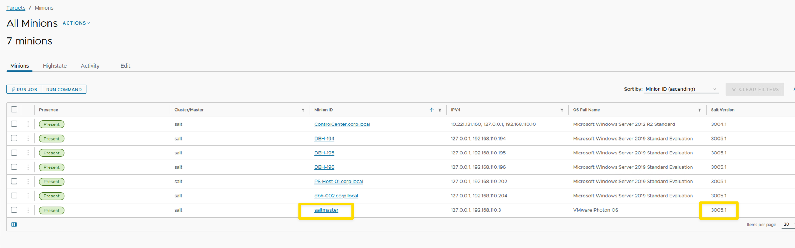
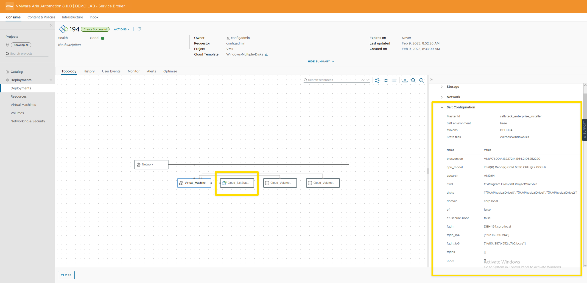
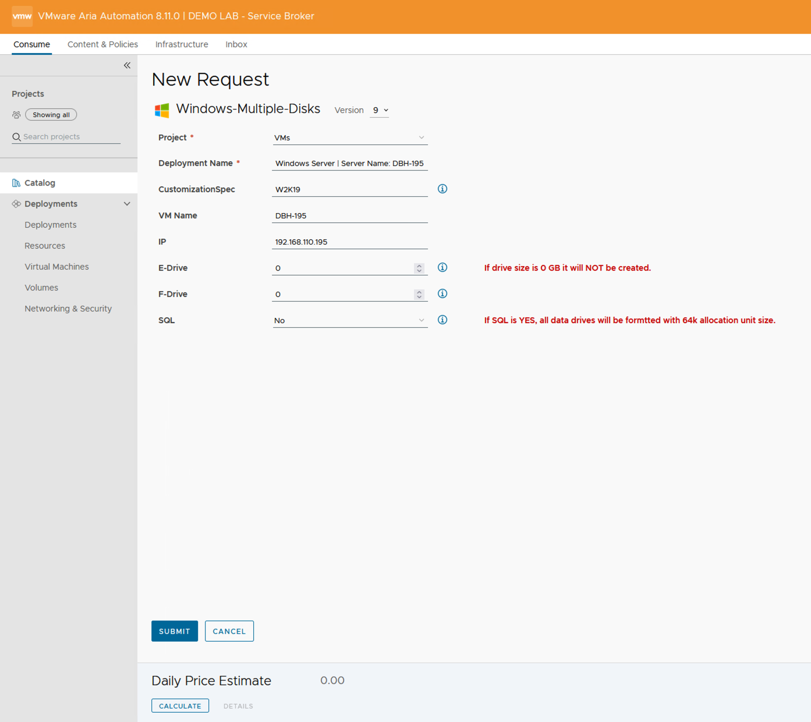

VMware Aria Automation and SaltStack Config Resource

How to start using the SaltStack Config Resource with VMware Aria Automation Cloud Templates.
Use Case
VMware Aria Automation Config has been the Configuration Management tool that I like to use with Servers, Windows and Linux. The first process to use salt with new servers is to install the salt minion, which is an agent that needs installed on the Server. There are many different ways to install the salt minion agent and what I wanted to show in this blog post is how to use the SaltStack Config Resource with the VMware Automation Cloud Template. When creating a Cloud Template in VMware Aria Automation, one of the options is to add the SaltStack Config Resource.
What the SaltStack Config Resource provides:
- [x] Automated Salt minion installation
- [x] Ability to add grains data to minion when the minion installation completes. See example yaml code.
- [x] The minion key is auto-accepted in SaltStack Config
- [x] If you delete the VM deployment in VMware Aria Automation, the minion key will be automatically removed from VMware Aria Automation Config. Built-in decommission.
- [x] Ability to run a state file when the minion installation completes. See example yaml code.
Requirements:
- [x] This blog was created using VMware Aria Automation version 8.11.0. The process may vary for different version of VMware Aria Automation.
- [x] TCP Port 445 needs to be open between VMware Aria Automation Config server and the new Server that the minion is being installed on.
- [x] Check the VMware Aria Automation Config server. The OS that you are using for the new server must have an agent file in the /etc/salt/cloud.deploy.d folder.
- [x] Check the VMware Aria Automation Config server. The version of the agent files in the /etc/salt/cloud.deploy.d folder must match the version of the salt master.
- [x] The script that creates the grains file when using the SaltStack Config Resource and VMware Aria cloud templates with Windows Servers needs to be manually replaced on the VMware Aria Automation Config Server (salt master). Future VMware Aria Automation Config installs with LCM (VMware Aria Suite LifeCycle) will include this fix. The script creates the grains file in the incorrect folder.
- Location of script on salt master: /lib64/python3.7/site-packages/salt/utils/cloud.py
- Make a copy of the original cloud.py before replacing with updated version.
- Where to get new script: https://github.com/saltstack/salt/blob/master/salt/utils/cloud.py
- The grains file will be created in "C:\ProgramData\Salt Project\Salt\conf" after the script is updated.
- Update: When I installed VMware Aria Automation Config 8.12, 8.13 and 8.14 I still needed to update the cloud.py file for the grains to be created properly.
Current OS support:

Any OS not listed is currently not supported at this time.
Cloud Template | Windows 2019 Server:

- Windows 2019 Server cloud template yaml code:
- You MUST add the remoteAccess code in the Virtual_Machine section for minion installation.
- grains data is added in the additionalMinionParams section of the yaml code.
- When the minion agent installation is complete, you will see the new minion listed in the targets automatically. You do not need to accept the minion key.
- click to expand yaml code
FEformatVersion: 1 inputs: CustomizationSpec: type: string description: Customization Specification default: W2K19 title: CustomizationSpec VMName: type: string title: VM Name minLength: 1 maxLength: 15 default: DBH-194 IP: type: string default: 192.168.110.194 EDrive: type: integer title: E-Drive default: 0 description: Enter 0 to disable the disk and not create FDrive: type: integer title: F-Drive default: 0 description: Enter 0 to disable the disk and not create SQL: type: string title: SQL description: Selecting SQL will format all DATA drives with 64k allocation. default: 'False' enum: - 'True' - 'False' resources: Network: type: Cloud.Network properties: networkType: existing constraints: - tag: network:VMs Virtual_Machine: type: Cloud.Machine properties: image: W2K19 flavor: medium customizationSpec: ${input.CustomizationSpec} name: ${input.VMName} remoteAccess: authentication: usernamePassword username: administrator password: VMware1! networks: - network: ${resource.Network.id} assignment: static address: ${input.IP} attachedDisks: ${map_to_object(resource.Cloud_Volume_E[*].id + resource.Cloud_Volume_F[*].id , "source")} edrivesize: ${input.EDrive} fdrivesize: ${input.FDrive} sql: ${input.SQL} # - VMware Max SCSI Controllers is 4 # - VMware Max Unit per SCSI Controllers is 15 Cloud_Volume_E: type: Cloud.Volume properties: capacityGb: ${input.EDrive} count: '${input.EDrive == 0 ? 0 : 1 }' SCSIController: SCSI_Controller_1 unitNumber: 0 provisioningType: thin Cloud_Volume_F: type: Cloud.Volume properties: capacityGb: ${input.FDrive} count: '${input.FDrive == 0 ? 0 : 1 }' SCSIController: SCSI_Controller_1 unitNumber: 1 provisioningType: thin Cloud_SaltStack_1: type: Cloud.SaltStack properties: hosts: - ${resource.Virtual_Machine.id} masterId: saltstack_enterprise_installer stateFiles: - /vcrocs/windows.sls saltEnvironment: base # - This is how you add grains data to the minion additionalMinionParams: grains: vCROCS_Roles: - webserver - database vCROCS_E_Drive: - ${input.EDrive} vCROCS_F_Drive: - ${input.FDrive} vCROCS_SQL: - ${input.SQL}
Cloud Template | Ubuntu 20 Server:
- Ubuntu 20 Server cloud template yaml code:
- You MUST add the remoteAccess code in the Virtual_Machine section for minion installation.
- grains data is added in the additionalMinionParams section of the yaml code.
- When the minion agent installation is complete, you will see the new minion listed in the targets automatically. You do not need to accept the minion key.
- click to expand yaml code
formatVersion: 1 inputs: CustomizationSpec: type: string description: Customization Specification default: ubuntu title: CustomizationSpec VMName: type: string title: VM Name minLength: 1 maxLength: 12 default: DBH-197 IP: type: string default: 192.168.110.197 resources: Cloud_Network_1: type: Cloud.Network properties: networkType: existing constraints: - tag: network:VMs Cloud_Machine_1: type: Cloud.Machine properties: image: ubuntu-20 flavor: small name: ${input.VMName} remoteAccess: authentication: usernamePassword username: administrator password: VMware1! customizationSpec: ${input.CustomizationSpec} constraints: - tag: env:VMs networks: - network: ${resource.Cloud_Network_1.id} assignment: static address: ${input.IP} Cloud_SaltStack_1: type: Cloud.SaltStack properties: hosts: - ${resource.Cloud_Machine_1.id} masterId: saltstack_enterprise_installer stateFiles: - /vcrocs/ubuntu.sls saltEnvironment: base additionalMinionParams: grains: roles: - webserver
- This screen shot shows how to get the "masterId" to use in the Cloud Template yaml code.

- This screen shot shows how to see the SaltMaster version.

Completed Deployment
- This shows what the deployment looks like after it is completed.
- Grain data is shown within the Salt Configuration section.

Custom Form to create the Windows Server Deployment
- Example of a Custom Form for Windows Server Builds

Lessons Learned
- See "Requirements" listed above
- See "What the SaltStack Config Resource provides" above
- If you need to update the minion agent files on the salt master server, in folder /etc/salt/cloud.deploy.d, you will have to have your VMware account team download the files for you or open an SR. The files are not public facing.
Helpful Links
- Configure a SaltStack Config integration in vRealize Automation
- Add the SaltStack Config resource to the cloud template
When I write about VMware Aria Automation, I always say there are many ways to accomplish the same task. VMware Aria Automation Config is the same way. I am showing what I felt was important to see but every organization/environment will be different. There is no right or wrong way to use Salt. This is a GREAT Tool that is included with your VMware Aria Suite Advanced/Enterprise license. If you own the VMware Aria Suite, you own VMware Aria Automation Config.
- VMware Aria Automation = vRealize Automation
- VMware Aria Automation Config = SaltStack Config